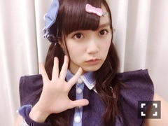
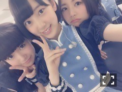
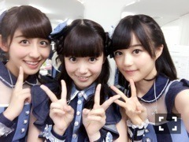

| 2015/09 06 Sun | ひめたん-0o0-その570 |
日記もめーるも
間が空いちゃいました
ごめんね( ´ ･ω･ ` )
お話したいことがたくさんあるので
長くなりそう。全部読んでね～

あ、ラストツインテール。
遅くなりましたが
真夏の全国ツアー2015
全16公演終了しました！
今までで一番ロングランだった！
たくさんの人に来ていただきました
スカパーさんで生中継もありましたね
本当にありがとうございました( ˇωˇ )
ラストは東京、神宮球場。
3万人のコール、
ラストの大合唱は圧巻でした。
メンバー一同、今年の夏は
ツアーと共に駆け抜けてきたので
最後に素敵な景色を見ることができて
本当に感謝の気持ちでいっぱいです。
アコースティックコーナー
いろんなアーティストさんのライブを観てて
いつか挑戦してみたいと思っていましたが
今回オーケストラの皆様、そして
いくちゃんのピアノに支えられて
実現することができました！
いくちゃんありがとう(´｡•ω•｡`)
ライブ終わってからいくちゃんに
ツアー中お世話になりましたと言われたよ
こちらこそです。笑
ホテル楽しかったね～
玲奈さんご卒業おめでとうございます！
私たちが乃木坂46になる前から
国民的アイドルとして
活躍されていた玲奈さん。
同じグループとして活動できるなんて
夢のような時間で幸せでした！
本当にお勉強になりました
いつまでも私たちの大好きな先輩です♡♡
ということで夏は終わりましたが
また新たなステージを
用意していただきました！
アンダーライブ4thシーズン、そして
武道館2days決定！
秋も冬もライブ尽くしo(^▽^)o
10月はAiiAシアターにて全12公演
12thアンダーメンバーで立ちます
未央ちゃんセンターのアンダーライブ。
私はこのツアー中ずっと
彼女を支えようと思っていたのに
逆に私が助けられてばかり( ´ ･ω･ ` )
頼もしい。
初めてのアンダーライブで
不安もあるかもしれないけれど
座長としてやりたいようにやってほしいな
私は全力でついていきます！
そして夢だった
武道館でのアンダーライブ。
ここまで皆勤賞の私としては
遂に叶ってしまうんだな～と思うと
何だか不思議な気分です。
こちらは
13thアンダーメンバーかな(´｡•ω•｡`)
ぜひ遊びに来てください！！

日曜の夜はらじらー！サンデー
先週は声優アーツのコーナーに
every❤︎ing!の木戸衣吹さん、
山崎エリイさんが2回目の登場＼(^o^)／
神宮球場でのライブ終わりの
生放送ということだったので
臨場感たっぷりでお届けしました～
藤森さんは雨の中神宮に
駆けつけてくださって
ペンライトも振ってくださって
中継もお疲れ様でした( ´•̥ω•̥` )
実は私もオリラジさんのお笑いライブに
行きたいねって生駒ちゃんと
いつも話してるんですよ～
中田さんとの二人トークは
ゆったりしてて新鮮でした！
リラックスして私もつい本音が。
スタジオに流れる空気もいつもと違って
ラジオの良さってこーゆーことだよねぇ
ニュースの間もずっとお話してました～＊
そして10時台ゲストは
いくちゃんちーちゃん！中3組揃った！
3月の乃木どこ以来かな？
性格はバラバラなのに
何故か2人といると居心地が良い。
いつもゲストを狩ろう狩ろうとするので
あんなにのほほんとした10時台
なかなかないんじゃないかしら。
そして私のベールを
剥がさないでください。なんてね。

ふたりともまた来てね♪
なんと今週、今夜も乃木坂回。
また私が登場します＼(^o^)／わーい
声優アーツに南條愛乃さん
そして乃木坂から高山一実ちゃんが
来てくれます！
みんな大好きひとりノリひめたんもやります
かずみんへのメッセージや
ライブの感想など待ってまーす！
10時台の対決コーナーは
「アメイジング対決」！
まだ間に合うお！待ってるよ！
チームらじらーのみなさん
30日は中継してくださったのですが
実は31日にも来てくれました( ´•̥ω•̥` )♡
顔見るとホッとする
家族が来てくれたみたいな感覚......
かわいらしいお花まで
ありがとうございました～＊
チームじょしらくのみなさん
久々に会えて嬉しかった！
ちらっと話しただけなのに
あの稽古場の楽しかった思い出が
ふわっと蘇ってくるようでした
またご一緒できたらいいなあ。
初森ベマーズ、NOGIBINGO!5
感想たくさんありがとう～
ひまわりの浴衣を着たのは
「世界でいちばん熱い夏」の
イメージにぴったりだったから。
関東の握手会でも浴衣着て！って
リクエストもらったので
あのひまわり着る予定です～
最後に
乃木坂工事中では
13th選抜発表もありましたね
たくさんの応援コメント
ありがとうございました( ´•̥ω•̥` )
更新できない間に読んだよ！
13thもアンダーメンバーでした
乃木坂の"底力"を、と
神宮ライブの映像にありましたが
私たちだけで
武道館ライブを成功させることが
乃木坂全体のステータスアップに繋がる
そう信じています。
個人としては
13thのテーマは「冒険」かな。
いろんなこと考えながら
でも考えすぎず、頑張りすぎずに
一番は楽しもうと思います( ˇωˇ )
うん、最近それを忘れてた気がする。
こんな私でよければ
また応援してくれたら嬉しいです
これからもよろしくお願いします♡

頑張っちゃわないひめたん、かあ。
この前らじらーでその話になってから
ずっと考えてるんだよね
またお二人に話聞いてもらおう。
(＊´・ω・＊)
コメント(1650)
2015/09/06 00:00